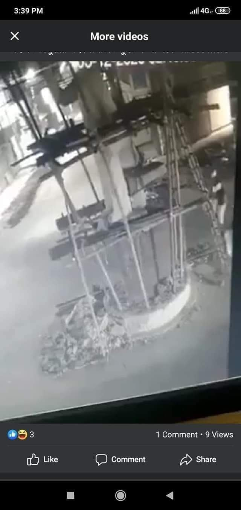
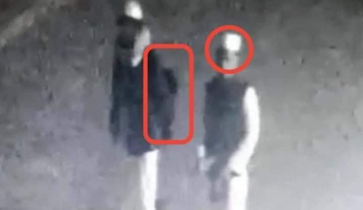

হামলাকারীদের দায়িত্ব নিতে আপনারা বাধ্য
৭ ডিসেম্বর, ২০২০
হামলাকারীদের দায়িত্ব নিতে আপনারা বাধ্য-
বঙ্গবন্ধুর ভাস্কর্য ভাঙার সি সি ফুটেজ নিয়ে অনেকেই সন্দেহ প্রকাশ করছেন এবং নানান আপত্তি ও প্রশ্ন তুলছেন। কিন্তু বাস্তবে সকল আপত্তির জবাব দেয়া সম্ভব। যেমন- সিকিউরিটি ক্যামেরা Move হয় কেমনে? Zoom হয় কীভাবে? পিছনে কথা বলে কারা? হামলাকারীদের হাতে Weapon নেই কেন? ব্লা ব্লা।
জবাবে বলা যায়, এ ফুটেজটি (হয়ত) PC থেকে মোবাইলের মাধ্যমে রেকর্ড করা হয়েছে। আর মোবাইল মুভ করছে, জুম হচ্ছে; ক্যামেরা নয়। যারা রেকর্ড করছে, তারাই কথা বলছে। নির্মাণাধীন মূর্তির আশেপাশে লোহাজাতীয় শক্ত কিছু থাকাটা অস্বাভাবিক নয়। সুতরাং খালি হাতে উপরে উঠে মূর্তি ভাঙা সম্ভব। বা তাদের ব্যাগেও হাতুড়ি থাকতে পারে।
মোদ্দা কথা, জজবাতি দুই মুসলিম ভাই হয়ত দ্বীনের মহব্বত নিয়ে এটি ঘটিয়েছে- এ সম্ভাবনাই প্রবল।
কিন্তু এতে তাদের তিরস্কার করার অধিকার কারও নেই। বরঞ্চ তাদের প্রটেক্ট করুন। এদের দায়িত্ব নিতে আপনারা বাধ্য। হয়ত বলবেন, এরা আমাদের উপর বিপদ ডেকে এনেছে। কেন দায়িত্ব নিব?
ইবরাহিমি চেতনার গান শুনাবেন, নবী মোহাম্মদ সা- এর কা'বা গৃহের মূর্তি অপসারণের কাহিনী শুনিয়ে জাতিকে জাগ্রত করবেন। আর ইবরাহিমি চেতনায় উজ্জীবিত হয়ে কেউ তা কার্যে পরিণত করলে দায়িত্ব নিবেন না, উল্টো নিজের পিঠ বাঁচাতে তাদের বলির পাটা বানাতে তাগুতের হাতে তুলে দিবেন- এ হতেই পারে না। এমন হীন চিন্তা ননবী মানহাজের সাথে সাংঘর্ষিক। আন্দোলনে নেমেছেন। জাতিকে নামিয়েছেন। ভালো। তবে নববী মানহাজ পুরোপুরি অনুসরণ করতে না পারলে অন্তত কিছুটা অনুসরণ করার চেষ্টা করুন।

